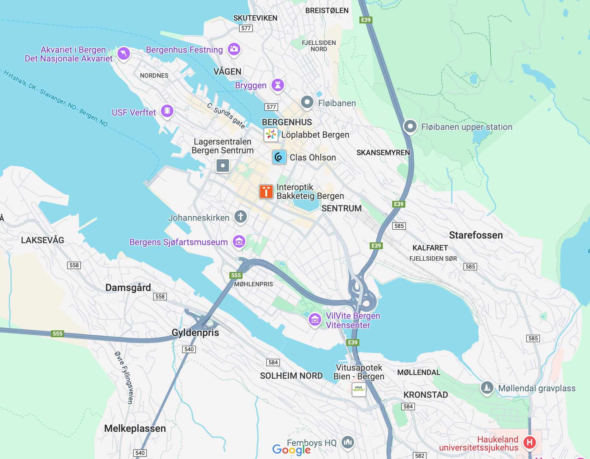
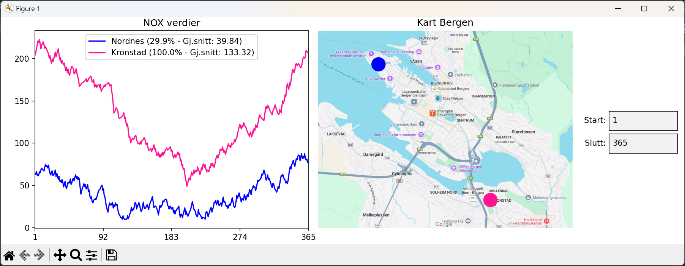
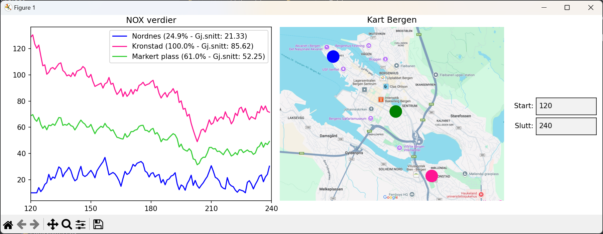

PYTHON PROGRAMMERINGSOPPGAVE
Luftkvalitet

Beskrivelse og bruksanvisning
Programmet viser en graf over luftkvaliteten oppgitt med NOX-verdier for målestasjonene Nordnes og Kronstad, samt et kart over Bergen med stasjonenes plassering. Grafen viser NOX-verdier per dag , mens legenden gir prosentvise sammenligninger med Kronstad og gjennomsnittlige NOX-verdier i hvert punkt. For å velge et spesifikt datointervall, skriver brukeren inn start- og sluttdag i tekstboksene angitt ved «Start» og «Slutt» på høyre siden, og grafen oppdateres automatisk for dette intervallet. Det kan legge til ett nytt punkt ved å klikke på kartet, som gir en beregning av luftkvaliteten basert på de to målestasjonene Nordnes og Kronstad.
Oppstart av programmet

Skjermdump 1 Viser programmet like etter oppstart, der standardintervallet gitt er dag 1 til dag 365 og grafen viser NOX-verdier for begge målestasjonene i intervallet.
Videre funksjonalitet

Skjermdump 2 Viser programmet i bruk, hvor det er markert et tredje punkt, i nærheten av sentrum, som beregner luftkvaliteten basert på de to målestasjonene. Intervallet er også endret til å starte på dag 120 og slutte på dag 240.